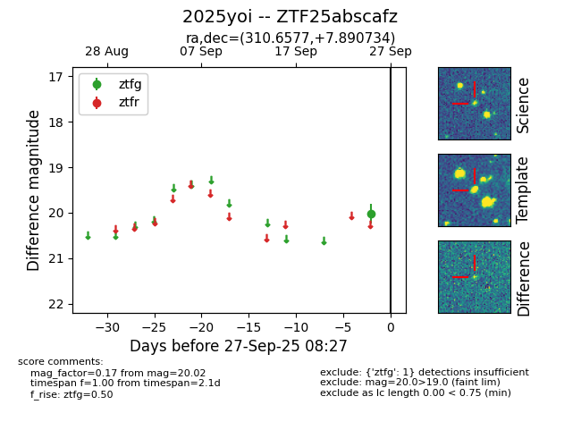

FINK: ZTF25abscafz
Lasair: ZTF25abscafz
ALeRCE: ZTF25abscafz
TNS: 2025yoi
YSE: 2025yoi
ZTF25abscafz (ztf,fink)
2025yoi (tns,yse)
equatorial (ra, dec) = (310.6577,+7.89073)
galactic (l, b) = (53.7305,-20.39710)

last ztfg=20.02
1 ztfg detections